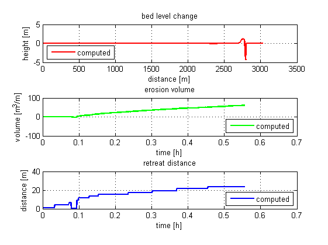

Generate some data
As shown before, we generate some data:
% generate dummy model xbm = xb_generate_model; % run your model xbr = xb_run(xbm); % read output data xbo = xb_read_output(xbr);
Analyze hydrodynamics
Derive hydrodynamic characteristics from the output and visualize the results. There are two visualisation functions for the hydrodynamics. The first function is the basic version, the second is the advanced function.
xbh = xb_get_hydro(xbo, 'Trep', xb_get(xbm, 'bcfile.Tp')); xb_plot_hydro(xbh); % basic xb_plot_hydro2(xbh); % advanced
There are more possibilities, like plotting the skewness and assymetry of the waves, but these parameters are not shown since they are not part of the current model output. Extend the output and the parameters will be shown as well.
Analyze sediment transports
Derive sediment transport characteristics from the output and visualize the results.
xbs = xb_get_sedtrans(xbo, 'Trep', xb_get(xbm, 'bcfile.Tp')); xb_plot_sedtrans(xbs);
Analyze morphodynamics transports
Derive morphodynamic characteristics from the output and visualize the results.
xbm = xb_get_morpho(xbo, 'level', xb_get(xbm, 'zs0')); xb_plot_morpho(xbm);
Spectral analysis
Create spectra from the output and visualize the results. Select four locations and the entire time series to do so.
t = xb_get(xbo, 'zs');
xbsp = xb_get_spectrum(squeeze(t(:,1,[1 50 100 200])));
xb_plot_spectrum(xbsp);